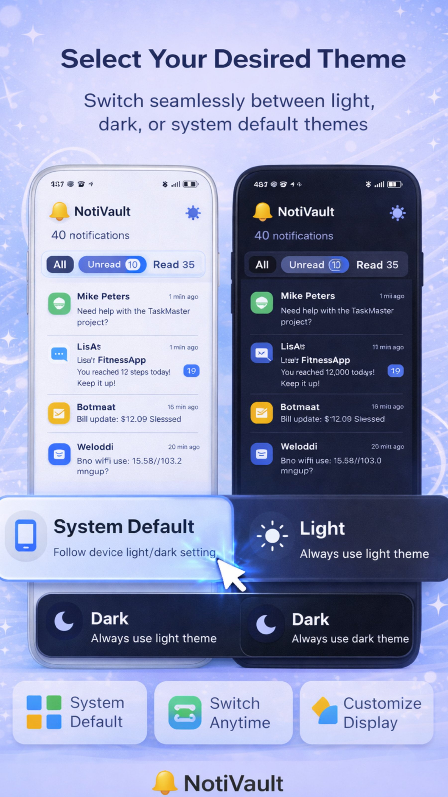
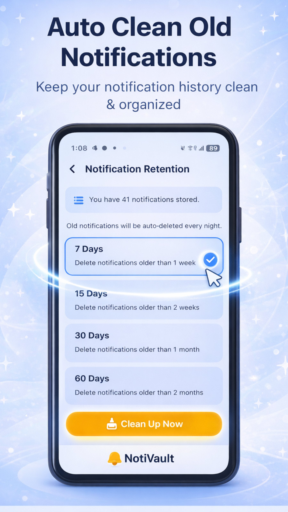
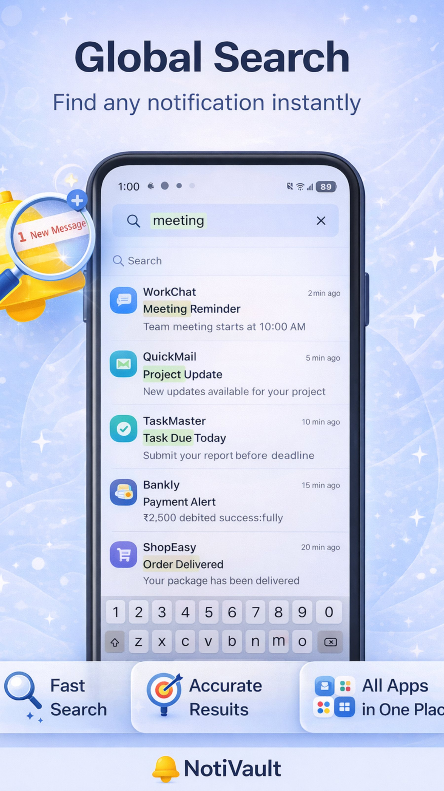

Why Notifications Disappear for Good
Android treats a notification as temporary. The moment you swipe it, tap "Clear all" or the sending app cancels it, it is removed from the shade. Most apps do not keep a copy, so unless something saved it at the moment it arrived, it is simply gone.
The good news: there are two reliable ways to keep a record — one built into Android and one that is far more powerful.
Method 1: Android's Built-in Notification History
Android 11 and newer include a basic notification history. It is switched off by default, so it only helps after you turn it on.
- Open Settings on your phone.
- Go to Notifications (on some phones: Apps & notifications).
- Tap Notification history and switch on Use notification history.
- From now on, dismissed notifications from the last 24 hours appear here.
💡 Limitation: Android only keeps 24 hours of history, has no search, and wipes the list when you restart the phone. Samsung, Xiaomi and some other brands hide or remove this option entirely.
Method 2: Use NotiVault for Full Notification History
NotiVault uses Android's official Notification Listener permission to save every notification as it arrives — before you can dismiss it. Everything is stored locally on your phone, so you can scroll back weeks, search by keyword, and filter by app.
- Install NotiVault free from Google Play.
- Open the app and tap Grant access — Android will open the Notification access screen.
- Enable NotiVault in the list and return to the app.
- That's it. Every new notification is saved automatically. Use Global Search to find any message, OTP or alert later.
Built-in History vs NotiVault
| Feature | Android built-in | NotiVault |
|---|---|---|
| History length | 24 hours | As long as you want (auto-clean 7–60 days optional) |
| Survives restart | No | Yes |
| Search | No | Full-text global search |
| Filter by app | Basic | Yes, organised by app & date |
| Available on all brands | No | Yes (Android 5+) |
| Data stays on device | Yes | Yes — no cloud, no account |
What Can You Recover?
Can I Recover Notifications From Before I Installed an App?
Honestly — no. No app can recover a notification that was never saved. That is why the best time to install a notification history app is before you need it. Set it up once and it quietly protects you from that point forward.
🔒 Privacy note: NotiVault never uploads your notifications. There are no servers and no sign-up — the data lives only in your phone's local storage and you can clear it at any time.



Frequently Asked Questions
Can I see deleted notifications on Android without an app?
Yes, on Android 11 and newer you can turn on Settings > Notifications > Notification history. It only keeps the last 24 hours and is cleared when the phone restarts.
Why can't I find Notification history on my Samsung or Xiaomi phone?
Some manufacturers move or remove the option. On Samsung look under Settings > Notifications > Advanced settings. If it is missing, a notification history app like NotiVault works on every Android brand.
Is it safe to give an app notification access?
Notification access lets an app read incoming notifications. Only give it to apps you trust. NotiVault stores everything locally on your device and has no servers, so nothing leaves your phone.
Does NotiVault drain the battery?
No. It listens passively through Android's built-in Notification Listener service and uses virtually no extra battery. The app is under 10MB.
Never Lose a Notification Again
Install NotiVault free and every future notification is saved, searchable and private.